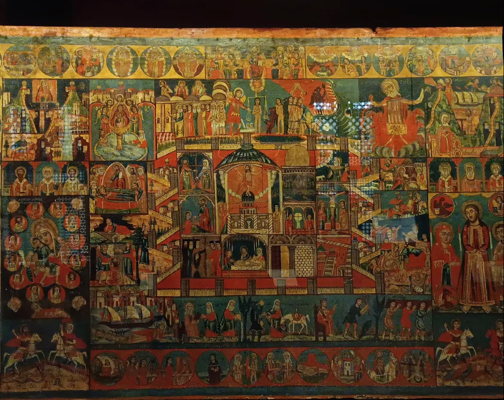

The Coptic Orthodox Cultural Center Taiwan is a nonprofit initiative dedicated to introducing the rich heritage of Coptic Orthodox civilization to Taiwan and fostering meaningful cultural exchange between Egypt and Taiwan. Our center celebrates one of the world’s oldest continuous cultures through education, art, history, language, music, traditional crafts, and community engagement. While rooted in the Coptic Orthodox heritage, our programs are designed to be welcoming and accessible to people of all backgrounds, beliefs, and ages. Through online courses, workshops, lectures, exhibitions, cultural events, and collaborative projects, we aim to create a vibrant learning community where participants can discover the beauty of Coptic heritage while building friendships across cultures. We believe that culture has the power to inspire understanding, preserve history, and connect people beyond borders. By sharing the treasures of Coptic civilization, we hope to contribute to a deeper appreciation of Egypt’s cultural legacy and encourage dialogue between communities in Taiwan and around the world.
